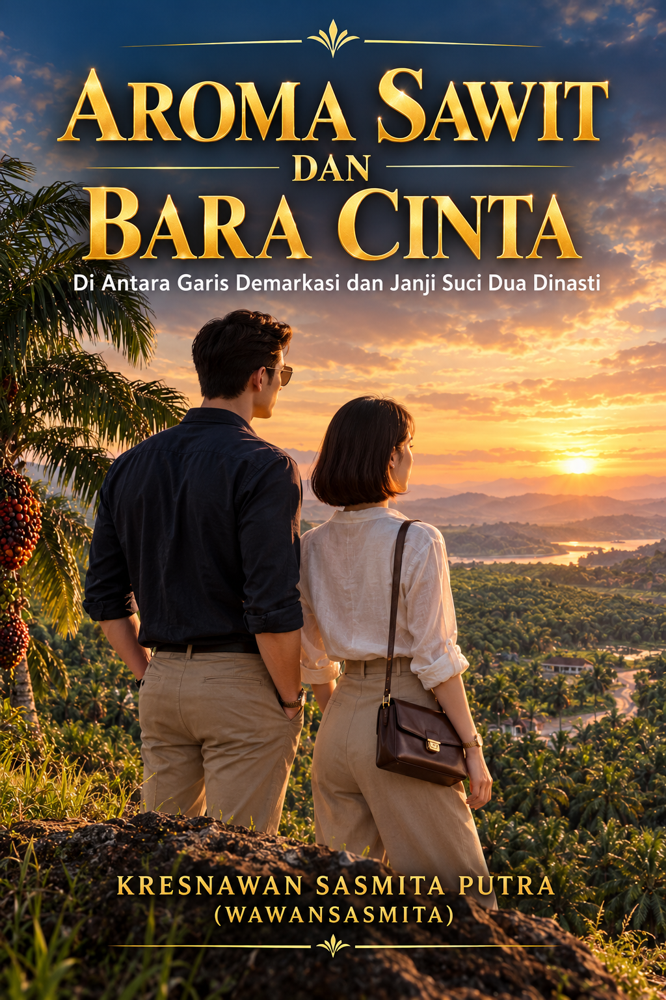

Aroma Sawit dan Bara Cinta — Di Antara Garis Demarkasi dan Janji Suci Dua Dinasti

"Di mana ada integritas, kecerdasan strategi, dan cinta yang murni, tembok dendam tertua sekalipun akan runtuh menjadi fondasi kejayaan yang tak tergoyahkan."
Di tengah terik pedalaman Riau dan deru mesin Pabrik Kelapa Sawit (PKS) berkapasitas 60 ton per jam, dua dinasti raksasa perkebunan—Keluarga Santoso (PT Sawit Cemerlang Nusantara) dan Keluarga Danadyaksa (PT Agro Makmur Jaya)—terkunci dalam pertempuran bisnis dan perseteruan keluarga yang telah berlangsung selama lebih dari dua dekade.
📜 Sinopsis Buku
Arka Santoso dan Kirana Danadyaksa dituntut berdiri sebagai rival di garis demarkasi perbatasan kebun. Namun, di balik sengitnya persaingan Toll Milling, sengketa refaksi timbangan, dan rumitnya pemenuhan audit keberlanjutan ISPO, terjalin sebuah aliansi rahasia yang terikat dalam kesucian hati dan ketajaman strategi bisnis.
Ketika intrik sabotase dan ancaman spekulan luar berusaha memicu bentrok massa demi menjatuhkan kedua perusahaan, Arka dan Kirana memilih bertarung dengan cara yang bermartabat. Lewat terobosan aliansi perbatasan (Joint Venture Boundary), integrasi rantai pasok CPO dan Inti Sawit (Palm Kernel), serta penerapan konsep Zero Waste PKS yang cerdik, kedua jiwa muda ini berjuang meruntuhkan tembok dendam keluarga demi menyatukan dua kerajaan sawit dalam restu yang sah.
💡 Bab Utama dalam Buku Ini
1. Bab 1–4: Dinasti Perbatasan dan Terobosan Titip Olah
Pengenalan persaingan dua dinasti, sengketa TPH perbatasan, serta negosiasi rahasia Arka dan Kirana dalam merancang kesepakatan Toll Milling Agreement demi menyelamatkan arus kas dan efisiensi olah PKS.
2. Bab 5–8: Sabotase, K3, dan Audit ISPO
Penanganan insiden sabotase di loading ramp, penguatan standar keselamatan K3, pembenahan sempadan sungai (riparian zone), penangkaran burung hantu (Tyto alba), serta taktik pembelian TBS tunai petani swadaya di TPH.
3. Bab 9–11: Terobosan B2B CPO dan Penguncian Rendemen
Penyelesaian krisis tangki timbun (storage tank) melalui penjualan lokal B2B ke Grup NRI, penguncian garansi rendemen OER/KER, serta terungkapnya dalang spekulan luar.
4. Bab 12–14: Janji Suci dan Meja Rekonsiliasi
Ikatan janji setia yang murni dan anggun antara Arka dan Kirana, penyampaian laporan keuangan konsolidasi yang melunakkan hati kedua patriarch, hingga penandatanganan kesepakatan Joint Venture Boundary.
5. Epilog: Mahakarya Dua Dinasti & Integrasi Zero Waste
Puncak pernikahan resmi Arka dan Kirana, kejayaan aliansi penjualan CPO dan Inti Sawit, serta komersialisasi limbah PKS secara sempurna (cangkang untuk boiler/biomassa, jangkos untuk pupuk organik, Miko, dan POME anaerobik).
📚 Informasi Buku & Catatan Penerbitan
- Judul Buku: Aroma Sawit dan Bara Cinta: Di Antara Garis Demarkasi dan Janji Suci Dua Dinasti
- Penulis: Kresnawan Sasmita Putra (Pen Name: Wawansasmita)
- Penerbit: Pustaka Wbiznet Publisher
- Tahun Terbit: 2026
- Format: Novel Fiksi Industri & Digital E-Book
- Fokus Materi Industri:
- Manajemen PKS 60 Ton/Jam & Skema Toll Milling Agreement (Titip Olah).
- Penetapan Refaksi, Standar Mutu ALB, Garansi OER / KER Inti Sawit.
- Standar Sertifikasi ISPO (K3, Sempadan Sungai, & Biological Pest Control Tyto alba).
- Strategi Zero Waste: Cangkang Biomassa, Janjang Kosong (Jangkos), Miko, & Kolam POME Anaerobik.